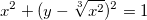
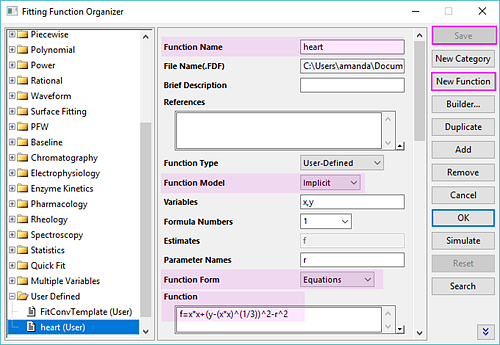
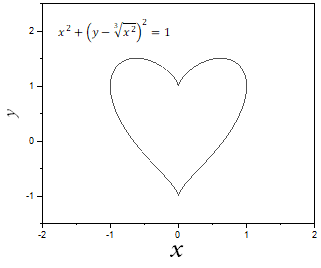

FAQ-1010 Wie erstelle ich das Diagramm einer impliziten Funktion?
create-implict-function-plot
Letztes Update: 16.05.2019
Um das Diagramm einer impliziten Funktion zu erstellen, müssen Sie eine implizite Funktion und diese Funktion dann simulieren. Um zum Beispiel diese Funktion zu zeichnen
- 
- Erstellen Sie eine benutzerdefinierte Funktion über Hilfsmittel: Fitfunktionen verwalten.
- Erstellen Sie eine neue benutzerdefinierte Funktion in der Kategorie "User Defined" .
- Definieren Sie die Funktion folgendermaßen:
- Funktionsname = Heart
- Funktionsmodell = Implizit.
- Variablen = x,y
- Funktionsform = Gleichungen
- Funktion = f=x*x+(y-(x*x)^(1/3))^2-r^2.
Hinweis: Sie können auch unter der Funktion "Circle" in der Kategorie Implicit nachlesen, wie eine implizite Funktion definiert wird.
- Klicken Sie auf die Schaltfläche Speichern, um sie zu speichern.
- Klicken Sie auf die Schaltfläche Simulieren, um eine Zeichnung dieser Funktion zu erstellen.
|
 |
- 
Schlüsselwörter:Kurve simulieren, implizite Funktion, Funktionsdiagramm, Circle, Kreisfunktionsdiagramm, Ellipse, Ellipsenfunktionsdiagramm